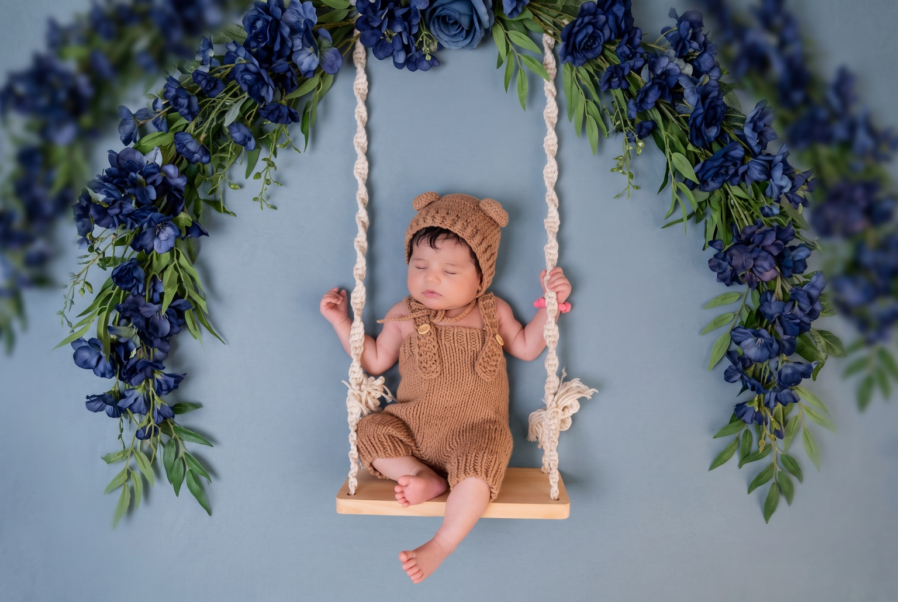

Studio • 7–20 days
$330
Two-hour newborn studio session.
- Unlimited HD photographs
- 20 professional edits
- Four styled themes
- Props and swaddles included
- Parents included
Warm, timeless newborn portraits created with styled themes, props, swaddles and professional editing. Choose a studio session or a comfortable in-home newborn photoshoot in Brampton.

The newborn stage changes quickly. A professionally planned session preserves the tiny details, expressions and connection families want to remember.
Little Frames by Manjinder offers two-hour studio sessions for babies from 7 to 35 days old. Each studio package includes high-resolution photographs, professional edits, styled themes, props and swaddles. Parents are included, with additional family members available for an extra fee.
Families who prefer to stay home can choose an in-home newborn photography session within Brampton. Contact us before booking to discuss your baby's age, preferred date and the session style that suits your family.
Clear package choices for studio and in-home sessions in Brampton.
Two-hour newborn studio session.
Two-hour studio session for an older newborn.
A newborn photoshoot in the comfort of your home.
$30 per additional family member for studio packages.

A studio session gives you access to styled themes, props and swaddles in a prepared photography environment.
An in-home session lets your family stay in familiar surroundings while the newborn photoshoot comes to you within Brampton.
Not sure which option is right? Send your baby's age and preferred date through WhatsApp, and we can discuss availability and the best package.
Select the studio package for your baby's age or choose the Brampton home session.
Send the baby's age, session type, preferred date and preferred time.
Confirm availability and discuss themes, styling and who will be included.
Package 1 is designed for newborns 7–20 days old. Package 2 is available for babies 20–35 days old.
Studio newborn sessions are scheduled for two hours.
Yes. Studio packages include props and swaddles, along with three to four styled themes depending on the package.
Yes. Parents are included in both studio packages. Additional family members are $30 each.
Yes. A Brampton in-home newborn photography session is available for $420.
Use the WhatsApp booking button and send your name, baby's age, contact number, session preference, preferred date and time.
Send your baby's age and preferred date to check availability.